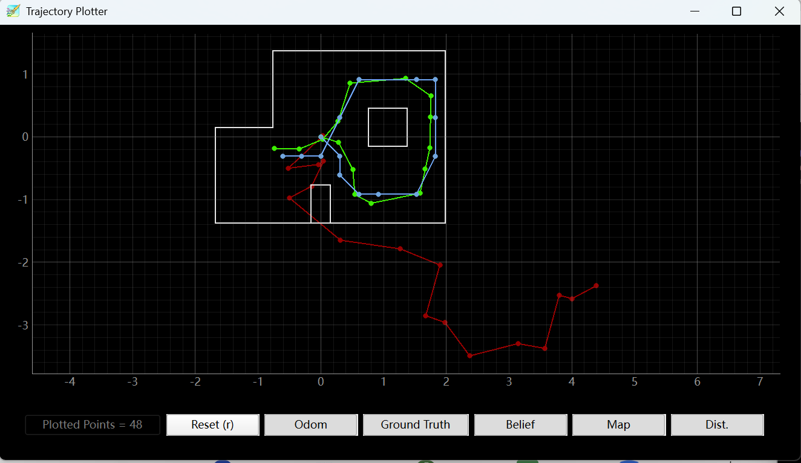
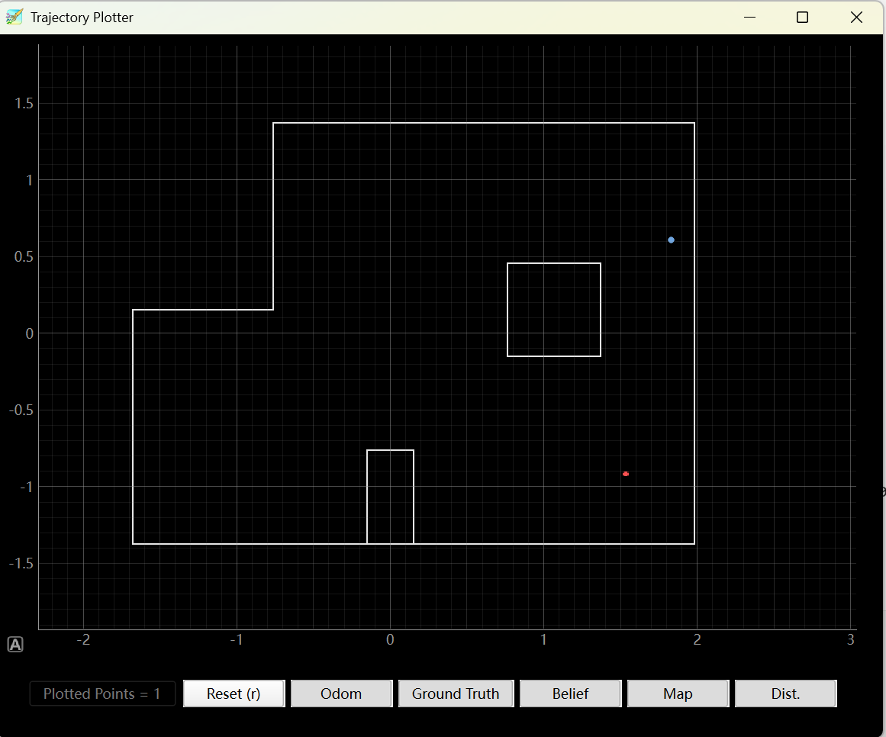
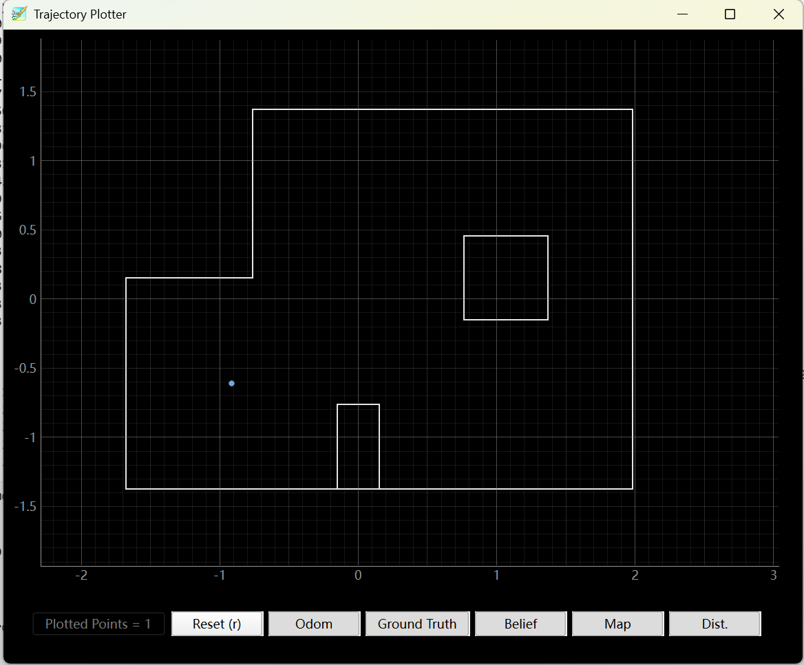
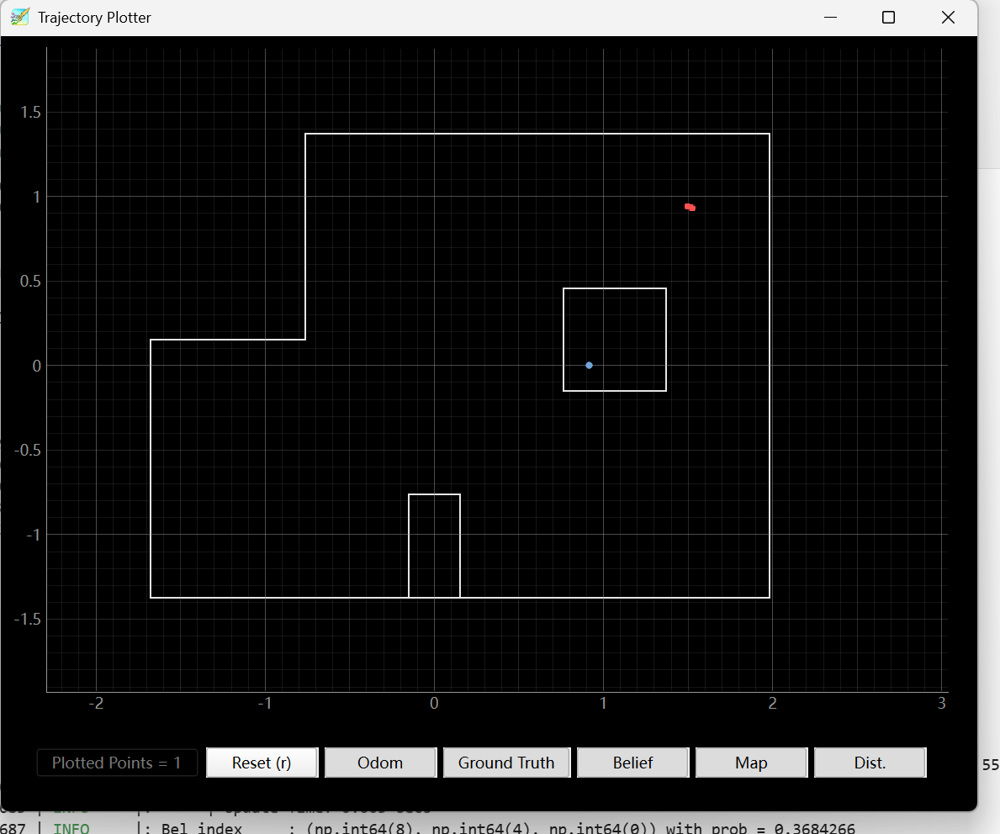
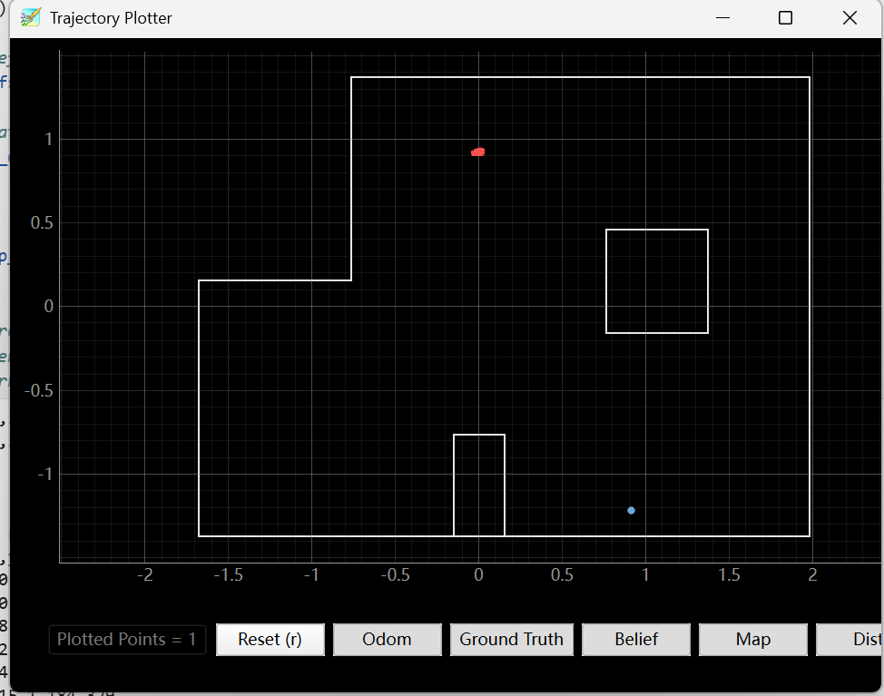

Hetao Yin (Hubery) — ECE 5160 Fast Robots
In this lab, I applied the Bayes filter localization framework to the real robot. Unlike Lab 10, the real-robot part only uses the update step of the Bayes filter. The robot is manually placed at known ground-truth locations, performs a 360 degree ToF scan, and then the measured scan is compared with the expected map observations to estimate the most likely pose.
The localization module uses meters internally, while the four required poses are given in feet. Therefore, I converted the ground-truth locations to meters when comparing them with the belief output. The four tested positions were (-3 ft, -2 ft), (0 ft, 3 ft), (5 ft, -3 ft), and (5 ft, 3 ft).
Before running the real robot, I first ran the provided simulation notebook. The simulation shows the odometry, ground truth, and Bayes-filter belief trajectory. This verifies that the provided localization module works correctly in the simulator before being connected to real ToF data.

For the real robot, the key implementation task was the perform_observation_loop() function inside the RealRobot class. The robot rotates in place and collects 18 ToF readings, one every 20 degrees. These readings are returned as a NumPy column array in meters, which is the format required by the localization module.
My Arduino scan command stores each scan point in the format idx,t_ms,target_deg,yaw_deg,err_deg,tof_mm. Since the Arduino sends the complete scan log after the scan is finished, the Python side first starts the scan, waits for the robot to complete the rotation, then requests the stored log using SEND_SCAN_LOG.
I added a scan notification handler in the BLE controller. This handler receives each BLE string notification, prints it for debugging, and extracts the last column tof_mm from each valid CSV data row.
def scan_notify_handler(self, sender, data):
s = data.decode(errors="ignore")
print(s, end="")
for line in s.splitlines():
line = line.strip()
if not line:
continue
self.scan_lines.append(line)
parts = line.split(",")
# idx,t_ms,target_deg,yaw_deg,err_deg,tof_mm
if len(parts) == 6 and parts[0].isdigit():
try:
self.scan_tof_mm.append(float(parts[5]))
except ValueError:
passThe reason I used notifications instead of repeatedly calling receive_string() is that the scan log is sent as several fast BLE messages. Notification handling receives all of the lines as they arrive, while repeatedly reading the characteristic can miss earlier lines and only catch the final message.
def perform_observation_loop(self, rot_vel=120):
self.ble.scan_lines = []
self.ble.scan_tof_mm = []
# Start receiving BLE scan data
self.ble.start_notify(self.ble.uuid["RX_STRING"],
self.ble.scan_notify_handler)
# Start the physical scan:
# step_deg | sample_count | wait_ms | kp | ki
self.ble.send_command(CMD.START_SCAN, "20|18|550|2.0|0.2")
# Wait for the robot to finish rotating and collecting data
time.sleep(24)
# Clear status messages from START_SCAN
self.ble.scan_lines = []
self.ble.scan_tof_mm = []
# Request the saved scan log from Artemis
self.ble.send_command(CMD.SEND_SCAN_LOG, "")
# Wait until all 18 ToF readings are received
start = time.time()
while len(self.ble.scan_tof_mm) < 18:
time.sleep(0.1)
if time.time() - start > 20:
print("Timeout, only got",
len(self.ble.scan_tof_mm),
"readings")
break
try:
self.ble.stop_notify(self.ble.uuid["RX_STRING"])
except:
pass
print("\nParsed ToF readings:", self.ble.scan_tof_mm)
if len(self.ble.scan_tof_mm) != 18:
raise ValueError(
f"Expected 18 ToF readings, got {len(self.ble.scan_tof_mm)}"
)
# Convert from mm to meters and reshape into a column array
sensor_ranges = np.array(self.ble.scan_tof_mm, dtype=float) / 1000.0
sensor_ranges = sensor_ranges[np.newaxis].T
# Bearings are not used by the provided localization module
return sensor_ranges, np.array([])The most important detail is the final array format: sensor_ranges must be an 18 x 1 NumPy column array. The Arduino reports ToF readings in millimeters, so I divide by 1000 before returning the data.
For each trial, I manually placed the robot at one of the required ground-truth locations. The robot then performed a 360 degree scan using the ToF sensor. I initialized the belief uniformly, ran one update step, and recorded the maximum-belief pose reported by the localization module.
The table below compares the required ground-truth poses with the estimated belief poses. The ground-truth positions are listed both in feet and meters because the lab positions are specified in feet, but the simulator plotter and localization output use meters.
| Trial | Ground Truth (ft) | Ground Truth (m) | Estimated Belief (m, deg) | Result |
|---|---|---|---|---|
| 1 | (5, -3, 0°) | (1.524, -0.914, 0°) | (1.829, 0.610, -30°) | Large y error |
| 2 | (-3, -2, 0°) | (-0.914, -0.610, 0°) | (-0.914, -0.610, 70°) | Very good position estimate |
| 3 | (5, 3, 0°) | (1.524, 0.914, 0°) | (0.914, 0.000, -170°) | Moderate/large error |
| 4 | (0, 3, 0°) | (0.000, 0.914, 0°) | (0.914, -1.200, approximately recorded) | Large error |
For this trial, the robot was placed near the lower-right part of the map. The localization result was (1.829, 0.610, -30°). The x coordinate was relatively close to the expected right-side location, but the y coordinate was on the opposite side of the map compared with the true pose.
Parsed ToF readings:
[421.0, 470.0, 543.0, 456.0, 394.0, 396.0,
480.0, 711.0, 1277.0, 1249.0, 2147.0, 964.0,
760.0, 713.0, 2171.0, 847.0, 530.0, 430.0]
Belief: (1.829, 0.610, -30.000)
This was the best localization result. The estimated position was (-0.914, -0.610) meters, which matches the converted ground truth almost exactly. The estimated heading was different from the nominal 0 degree heading, but the position localization was very accurate.
Ground Truth:
(-3 ft, -2 ft) = (-0.914 m, -0.610 m)
Belief:
(-0.914, -0.610, 70.000)
For this trial, the expected position was (1.524, 0.914) meters. The belief result was (0.914, 0.000, -170°). This estimate was not as accurate as Trial 2. The result moved toward the center of the map, which suggests that the scan was not distinctive enough at this location or that the actual heading/rotation sequence did not perfectly match the expected observation order.
Ground Truth:
(5 ft, 3 ft) = (1.524 m, 0.914 m)
Belief:
(0.914, 0.000, -170.000)
For this trial, the expected position was (0.000, 0.914) meters. The estimated position was approximately (0.914, -1.200), so the localization result had a large error. This position was one of the less reliable cases in my real-robot test.
Ground Truth:
(0 ft, 3 ft) = (0.000 m, 0.914 m)
Belief:
approximately (0.914, -1.200)
The real robot results were mixed. One pose, (-3 ft, -2 ft), localized very well in position. The other three trials had larger errors, especially in the y direction or heading. This difference shows the main point of the lab: localization works cleanly in simulation, but real-world sensing and motion introduce errors that can strongly affect the belief update.
Several factors likely contributed to the localization error. First, the robot's physical rotation was not perfectly ideal. Although the target angles were spaced by 20 degrees, the real robot sometimes corrected aggressively and the final orientation could drift from a perfect 360 degree scan. Since the update step assumes that the 18 ToF readings correspond to fixed angular increments, any angular mismatch changes the observation pattern and can move the maximum belief to the wrong cell.
Second, the ToF readings were noisy and sometimes contained very large or very small values. This is especially problematic because the update step multiplies the likelihoods of all beams together. A few inaccurate beams can make an incorrect pose look more likely than the true pose. The issue is more visible at locations where the geometry is less unique or where several poses produce similar distance patterns.
Third, the coordinate convention must be handled carefully. The lab gives the marked poses in feet, but the plotter and localization code report the belief in meters. After realizing this, I compared the estimates against the converted meter values instead of directly comparing them with the original feet values.
Overall, the lab was successful because the full real-robot localization pipeline ran: the robot performed a 360 degree scan, the Python code received and parsed 18 ToF readings, the readings were converted to the required NumPy column array, and the Bayes filter update produced a belief estimate for each marked pose. The results also showed why real robot localization is harder than simulation: the algorithm depends strongly on accurate angular sampling, reliable ToF data, and consistent placement of the robot in the known map.
In this lab, I connected the real robot to the optimized Bayes localization code. I implemented the real observation loop, collected 360 degree ToF scans at four marked poses, and ran the update step from a uniform prior. The best result matched the ground-truth position almost exactly, while other trials showed larger errors due to real-world sensor noise and imperfect rotation. This experiment demonstrated both the usefulness and limitations of grid-based localization on a real robot.
In this lab, I used AI to help organize the report structure, summarize the debugging process, and explain the real-robot observation loop, BLE data parsing, and localization results.